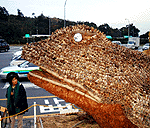
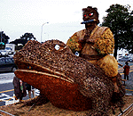
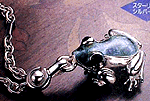

五右衛門座乗の巨大ガマ！いぼガエル発見！ 【熊本発=だいちゃん様】普段は、立ち寄ったこともない九州自動車道の熊本北インター近くのパーキングエリアに行ったときのことです。トイレのそばに、超巨大なガマガエルがいました。いぼが、ひとつひとつ突起しているのが、カエルというよりもゴジラみたいで超リアルでした。
【熊本発=だいちゃん様】普段は、立ち寄ったこともない九州自動車道の熊本北インター近くのパーキングエリアに行ったときのことです。トイレのそばに、超巨大なガマガエルがいました。いぼが、ひとつひとつ突起しているのが、カエルというよりもゴジラみたいで超リアルでした。
 もっと、びっくりしたのは、背中に、赤目が恐い髷を結った五右衛門が乗っていたことです。この姿で、都会を歩けば、ゴジラも後ずさりするでしょう。これを見た人は、みんなぶったまげています。だれがなんのために建設したのか、よくわかりません。暗かったので説明板も読めませんでした。
 【全国かえる奉賛会】画像を補正して、明るくしたので、様子が詳しくわかるが、実際に見たダイちゃんによると『暗闇に浮かび上がる像は、かなりの恐怖であった』という。カエルグッズが一般化するにつれて、カエルが持つ、まがまがしさが薄れ行くこのごろであるが、久々に胸を打つカエルである。 これは、すごい迫力だけど、熊本とガマ。熊本と五右衛門は、関係があるのだろうか？謎。高速道路の真っ暗闇も切り裂く、迫力ありすぎのガマ像を建設したのは、いったいだれなんだ！全国のカエラーは、熊本北インター付近のパーキングエリアに行ってみよう！！ 西暦２０００年を機にカエル暦採用を！【全国かえる奉賛会】キリスト生誕暦の世紀末に出現した、五右衛門が乗るガマカエルは、仏教徒多数のくせに、結婚式やクリスマスには、にわかバテレンになってしまう、われわれ日本人に警鐘をならすため、きっと観世音菩薩がつかわした、怒りの化身であるかもしれない。目覚めよ、仏教国家の日本人。新年からは、キリスト生誕暦と決別して、『カエル暦元年』としようではないか。エナメル仕上げカエルの画像をゲット！ 【北九州発=NIKOちゃん大魔王同志記者】飛び回ってゲコゲコではなく、ゲホゲホカエルしています。11月28日号で紹介していただいた、『エナメル仕上げの精緻なカエル』の画像をお届けします。
【全国かえる奉賛会】これはもう、注文するしかないぞー。チラシによると『ティファニーをはじめ高級宝飾店でも取り扱われているメンズアクセサリーのトップメーカー、サツルノ社製』だそうだ。銀で細工したカエルの背中は、エナメル製だああ。 
賀状はモロー２０００年記念カードで！【東京発=モロー寺井同志記者】２０００年記念カードのデザイン完成しました！先輩うしし氏が多忙の中仕上げてくれました。 ここものぞいてみてください。ナイスなキャラがいっぱいっす。１４日頃印刷があがる予定。よかったら年賀状などにおつかいいただければと思ってます。
今回は１枚１００円に値下げ、さらに１０枚以上購入で一割り引き。そして未使用画像からおまけカードもつけます！２０日までにはお届けできると思います。けろテン市場で発売します。まもなく開始！しばし待てええ。８日午後には開設予定だ。 アリー・My・ラブ２をカエル虐待番組と認定！【全国かえる奉賛会】『アリー・My・ラブ２』に出演していたカエルのステファン一家が、中華料理店で料理された問題について、全国かえる奉賛会では、同番組を、カエル虐待番組と認定した。ペットを食べてしまう、という脚本を書く無神経が信じられない。脚本家自身が番組に出演して、空揚げになってもらい、他の出演者に食べられてほしいぞ。わしゃー、もう、見ないことにした。飼っている犬とかネコを食べたりするかってんだよなーっ。投稿採用者に武功カエル徽章を授与！ |
かえる古新聞過去に取り上げた記事を見出し付きで一覧したい人は、ここをクリック◆創刊号を見る◆先週号を見る◆話題の号を見る◆かえる新聞の昔を読む
|
私も入っています。。全国かえる奉賛会
大王様に会うには、このバナーをクリック。ずっと奥に写真館があるぞ。全国かえる奉賛会に入会するには、自分のホームページのどこかに、下の部分を追加するとバナーがリンク付きで表示されるぞ。どんどん入会しましょー |


|